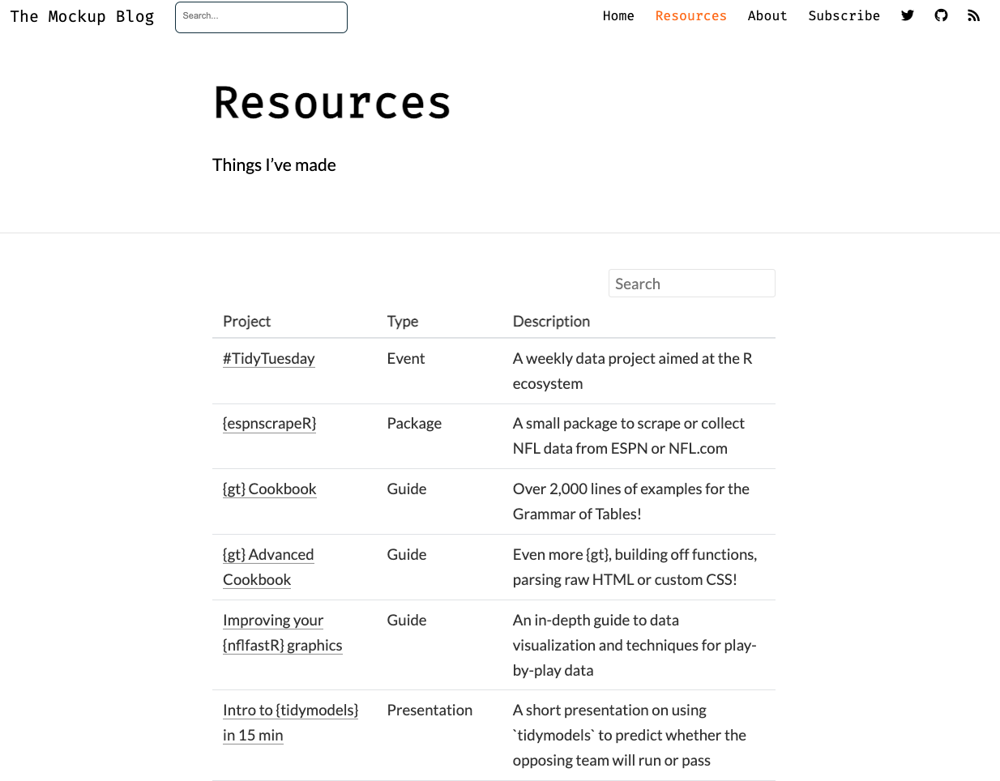

library(metathis)
meta() %>%
meta_description(
"This book will teach you how to do data science with R..."
) %>%
meta_name("github-repo" = "hadley/r4ds") %>%
meta_viewport() %>%
meta_social(
title = "R for Data Science",
url = "https://r4ds.had.co.nz",
image = "https://r4ds.had.co.nz/cover.png",
image_alt = "The cover of the R4DS book",
og_type = "book",
og_author = c("Garrett Grolemund", "Hadley Wickham"),
twitter_card_type = "summary",
twitter_creator = "@hadley"
)Including “extra” content in your blog is very useful for collecting all of your content beyond just blogposts. For example, I have a Resources page that sublinks to other things I’ve created or wanted to share at a specific URL.
Header photo by jesse orrico on Unsplash

These extra pieces of content include xaringan slides, books, or one-off RMarkdown “sites” that don’t really fit into a blogpost.
My approach is to store these extra pages into a new folder called /static/ in my blog project directory. I do this to generally keep my top-level directory a bit cleaner, and to separate them out from the core blog. Note that lastly, you do not need to put everything in /static if you don’t want to, and you can keep everything at the top-level directory which would serve up content at site-name.com/content-name.html.
Including alternate content
As long as you are using distill v 1.2 or later and rmarkdown v 2.7 or later, you can include alternate RMarkdown-generated content within your distill blog!
Alternate format in this case really just means any other RMarkdown format besides distill.
Now while you can knit files locally and see the output, it will not be moved to your _site directory and served up on your website until you rebuild the site.
These alternate-format pages are rebuilt and included in the _site directory whenever you run rmarkdown::render_site() OR build one of the top-level site pages (ie index.Rmd, about.Rmd, etc).
So for my example, my static pages get written to:_site/static/FILE-NAME.HTML
and will show up on my blog at:themockup.blog/static/FILE-NAME.HTML
For example my gt cookbook is linked at:
https://themockup.blog/static/gt-cookbook.html
That’s easy enough, and now you can include basically any piece of arbitrary content you create via RMarkdown, all collected underneath the main URL of your blog/site!
Resources pane
Since I’m on distill, to provide links for everything I want to add another “tab” to my site that shows all the various extra content. I add the below code to my navbar in my _site.yaml file to add a new tab.
navbar:
right:
- text: "Home"
href: index.html
- text: "Resources"
href: resources.html
- text: "About"The resources page itself can be super lightweight and just link out to the files, but I decided to use a reactable table that references all of the content so it is searchable and sortable. This page is generated by my resources.Rmd file.
Again, you could just provide the raw URL links as hyperlinks to the various pieces of content, it’s “just another page” so feel free to do whatever you want!
Tagging
Having various pieces of content sublinked on your blog generally makes them available to folks trying to access the content on the web. However, it’s also a good idea to add “tags” to them so that they are organically discoverable via search engines. The other benefit is that tags can make your links display summary cards or other rich content on social media sites.
Adding social cards/previews to one-off pieces of content and sub-pages of your blog can help a lot with engagement1. It also has the benefit of helping describe the linked content without having to embed ALL of the description into the body of the Tweet/LinkedIn post. Ultimately it’s also more rewarding as rather than a bare link or a preview card without an image, you can explicitly decide what you want the preview to show!
1 In some cases, 2-3x more views/clicks per https://www.socialsongbird.com/2020/01/how-to-create-clickable-posts-on-social.html
Blogposts
Now for most blogposts in distill you are able to get social preview cards “for free” in that they can just be added via some extra lines in the YAML header. The preview argument turns into the preview image on the index page of your blog and in the meta tags. The title and description also get written into meta tags to be reused by social.
---
title: "JavaScript & D3"
description: Enhance communication with interactive visualizations
base_url: https://rstudio.github.io/distill
preview: images/javascript-d3-preview.png
twitter:
site: "@rstudio"
creator: "@fly_upside_down"
---
{distill} home page
However, notably the preview image option is missing from the MAIN page of your distill blog.
You can use the strategies outlined below with metathis or <meta> tags to create a nice tag/meta details for your distill homepage as well.
While I’ll be covering more details about metathis below, here is what my index.Rmd looks like that attaches <meta> tags via metathis
---
title: "Posts"
site: distill::distill_website
listing: posts
---
{r, include=FALSE, results='asis'}
library(metathis)
meta() %>%
meta_social(
title = "The MockUp Blog",
description = "Tom's musings on all things R",
url = "https://themockup.blog/",
image = "https://raw.githubusercontent.com/jthomasmock/radix_themockup/master/static/logo-plot.png",
image_alt = "Chaos into tidy code",
og_type = "website",
og_author = "Tom Mock",
twitter_card_type = "summary",
twitter_creator = "@thomas_mock"
)
Others have written about social card/meta tags for {blogdown}, with examples from Alison Hill, Xavier A, Sharleen W., and Len Kiefer.
Extra content
Those built-in options work great for blogposts, but again I also have quite a few extra pieces of content, like my {gt} cookbooks, {xaringan} slide decks, or example interactive tables.
For these non-blog pages, they are essentially just bare RMarkdown sites. As such, often I need to manually add the <meta> tags that tell the various social pages “what to do” with the page as far as previews.
{metathis} options
An aside that tripped me up is that the preview image needs to be linked as a URL, so you won’t be able to just link to a local file, but rather the site or GitHub URL for that specific image.
Generally you can just write a RMarkdown chunk with echo=FALSE as you’d expect and put the metathis code in it.
meta() %>%
meta_description("My awesome presentation")However, for some pieces of content you in RMarkdown there are already <meta> tags that are generated, or they need to explicitly need to be added into the header of the HTML file.
In that cases where the basic approach is not working, I recommend following Garrick’s {metathis} advice from the readme.
Option 1:
Using
metathis::include_meta()to explicitly declare the<meta>tags as an HTML dependency
Option 2 (if all else fails):
In other packages or situations, you can use
include_meta()to explicitly declare the meta tags as an html dependency or use write_meta() to save the<meta>tags to an.htmlfile that can be included viaincludes: in_headerin the YAML of the RMarkdown doc. (Inblogdown, consult your blogdown/hugo theme for the correct inclusion method.)
meta() %>%
meta_description("A fantastic blog post") %>%
write_meta("meta.html")That will generally solve most problems for including social tags in RMarkdown.
Optimal image sizes
Each of the social sites have “optimal” sizes/ratios of the images, and Hootsuite has a meta-guide of social media image sizing.
The short summary is, keep your image file size relatively small, as it’ll cost less in bandwidth and is presented relatively small anyway on social. Twitter specifically will crop your images to a square for basic preview cards.